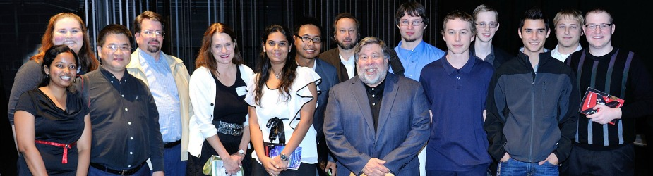

Information for Computer Science Students
Scholarships
Activating your CS account
Faculty advising for students
Internship in Computer Science form
CS computer systems (CS wiki on VPN)
Lab hours
Azure Dev Tools for Teaching accounts for CS majors
Academics
Computer Science
undergrad programs
,
grad programs
Undergrad admissions
, grad admissions
System track
(
course sequence
)
Management track
(
course sequence
)
Honors guidelines
Minor
,
certificate
Electives
MSCS degree requirements and electives
.